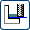

在工序导航器中，右击 PROGRAM 并选择插入→工序。
在创建工序对话框中，将类型设置为 mill_planar。
在工序子类型组中，点击底面和壁 。
程序 = PROGRAM 刀具 = MILL (铣刀—5 参数) 几何体 = WORKPIECE 方法 = MILL_FINISH
程序 = PROGRAM
刀具 = MILL (铣刀—5 参数)
几何体 = WORKPIECE
方法 = MILL_FINISH
在名称输入框中，键入 FACE_TOP。
点击确定。
将打开底面壁对话框。